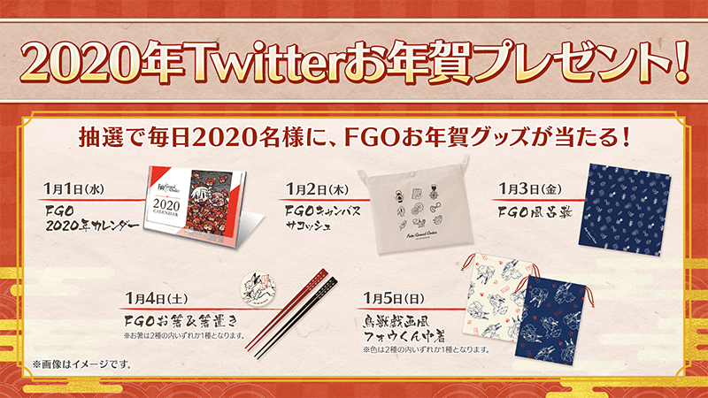
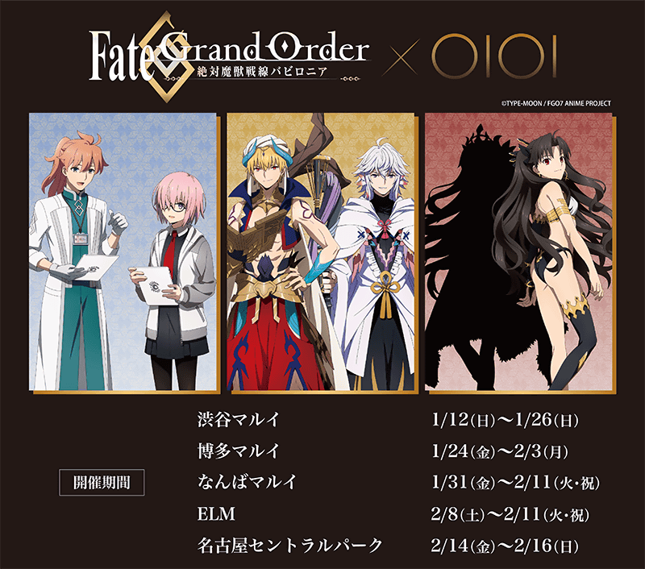

感謝您使用「Fate/Grand Order」。
2019年12月28日(六)在「Fate/Grand Order Chaldea Park Caravan 2019-2020」福岡會場舉辦的「FGO特別談話 in 福岡」，發表了有關智慧型手機FateRPG「Fate/Grand Order」為首的FGO PROJECT及Fate系列的新情報。
以下介紹一部份新情報。
◆為了記念「Fate/Grand Order Chaldea Park Caravan 2019-2020」福岡會場的舉辦贈送聖晶石10個！◆
為了記念「Fate/Grand Order Chaldea Park Caravan 2019-2020」福岡會場的舉辦，向2019年12月29日(日) 2:59前通過「特異點F 炎上汙染都市 冬木」的御主贈送聖晶石10個。
＞＞詳情請確認此處的公告。
◆『「Fate Project 除夕 TV特別 2019」放送記念宣傳活動』的舉辦發表！◆

為了記念「Fate Project 除夕 TV特別 2019」的放送，發表了舉辦『「Fate Project 除夕 TV特別 2019」放送記念宣傳活動』。
＞＞詳情請確認此處的公告。
◆「2020年新年宣傳活動」一部份情報先行公開！◆
介紹預定自2020年1月1日(三)舉辦的「2020年新年宣傳活動」一部分內容。
1.達成10萬轉推的話，贈送新年限定概念禮裝＆2,020萬QP！
2020年1月1日(三)會在Fate/Grand Order官方Twitter(@fgoproject)投稿「2020年新年宣傳活動」的推特。
宣傳活動推特在2020年1月3日(五) 22:59(預定)前達成10萬轉推的話，會向所有的御主贈送「新年限定★4(SR)概念禮裝1張」與「2,020萬QP」。
2.期間限定「福袋召喚2020(職階區別)」舉辦決定！
自2019年12月31日(二) 23:00(預定)，舉辦期間限定「福袋召喚2020(職階區別)」，能以有償聖晶石15個召喚確定職階區別1位期間限定★5(SSR)從者的11回召喚。
「福袋召喚2020(職階區別)」必定會入手從過去的期間限定Pick Up召登場的期間限定從者全56位之中的1位。
能從9種的職階區別召喚選擇1個召喚。
※一人僅限1次。
※召喚對象對應從9種選擇召喚的確定1位期間限定★5(SSR)從者以外，也包含一部份的★4(SR)、★3(R)從者及概念禮裝。
※用有償聖晶石15個才能召喚。無法用無償聖晶石召喚。
※聖晶石購入時賦予的「附贈(オマケ)」為無償聖晶石。
由於不包含在有償聖晶石的個數，請注意別搞錯。
＞＞詳情請確認此處的公告。
◆期間限定活動「復刻:雀之旅社活動日誌～閻魔亭繁盛記～ 輕量版」舉辦！◆
發表了期間限定活動「復刻:雀之旅社活動日誌～閻魔亭繁盛記～ 輕量版」自2020年1月4日(六) 8:00(預定)舉辦。
＞＞詳情請確認此處的公告。
◆「Fate/Grand Order 2020年 Twitter 賀年贈送！」舉辦◆

跟隨＆轉推Fate/Grand Order官方Twitter(@fgoproject)的話，贈送每天替換的非賣品「FGO賀年週邊」抽選，每天2,020名，合計10,100名！
■宣傳活動期間
2020年1月1日(三)～1月5日(日) 每日10:00～22:59
詳情請確認此處的公告。
https://www.fate-go.jp/newyear_cp2020/
◆TV動畫「Fate/Grand Order -絕對魔獸戰線巴比倫尼亞-」丸井合作決定！◆

決定了TV動畫「Fate/Grand Order -絕對魔獸戰線巴比倫尼亞-」與全國5都縣市丸井的合作。
詳情請確認此處。
https://www.0101.co.jp/405/info/index.html?contents_id=0075
◆「Fate/Grand Order」LINE官方帳號開設！◆
開設了「Fate/Grand Order」的LINE官方帳號。
今後會送上活動情報。
在加入好友「ID搜尋」輸入@fgoproject，或讀取下述QR碼。
◆「Fate/Grand Order」的官方LINE貼圖登場！◆
能與「Fate/Grand Order」的角色度過年尾年初和日常的「FGO壓歲錢賀年貼圖」以期間限定販售中！
包含日常也能使用的貼圖，以1組40個販售。
■價格
250円(含稅)/100硬幣
■販售期間
2020年1月7日(二)為止
詳情請確認此處。
https://line.me/S/sticker/16081
今後也請多多指教「Fate/Grand Order」。